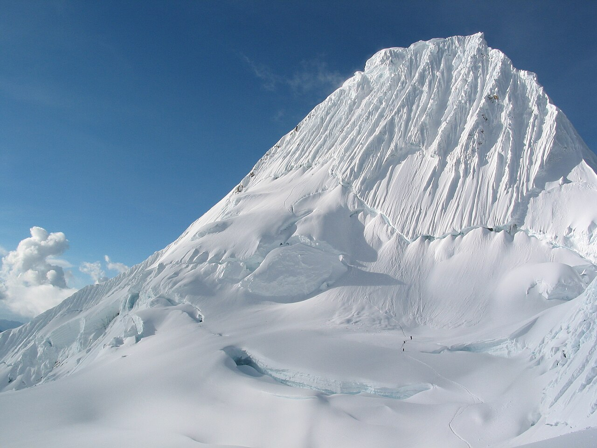
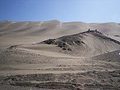
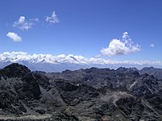
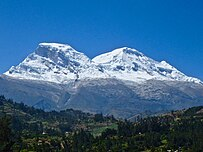
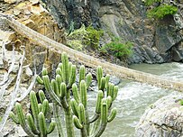

Bienvenidos a un pequeno recorrido por las maravillosas tierras de pueblos originarios, bienvenidos a Ancash

Aqui una Pequena pero emocionante aventura que nos aguarda
Ancash, es un sitio maravilloso en el cual te puedes encontrar
desde Montanas nevadas como el Huascaran, asi como las hermosas costas de nuestro litoral peruano
Podras encontrar diferentes maneras de divertirte, como...
-
Desierto de Chimbote

-
Cordillera Blanca y cordillera Negra

-
Nevado Huascaran

-
Rio yanamayo

tenemos un clima bastante variado, como en los andes, donde predomina mas las temperaturas bajas,
o el desierto costero, que como podran imaginar, casi inospito y muy pocas probabilidades de lluvia,
aun asi es el ambiente con mas poblacion en todo el departamento
PLatos tipicos de la region